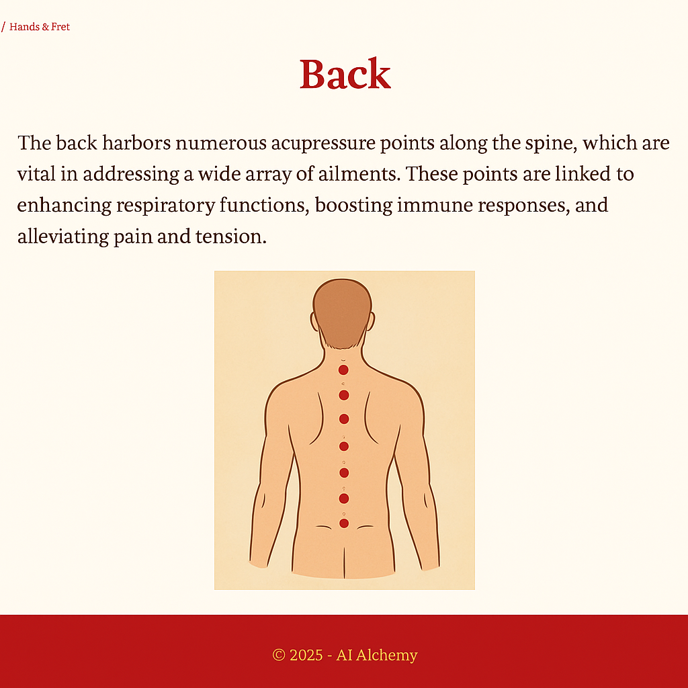

Pressure Points: Back
The back contains many therapeutic pressure points along the bladder meridian. These points are commonly used to address back pain, fatigue, and organ function. Stimulating these areas can restore balance and ease chronic tension.
